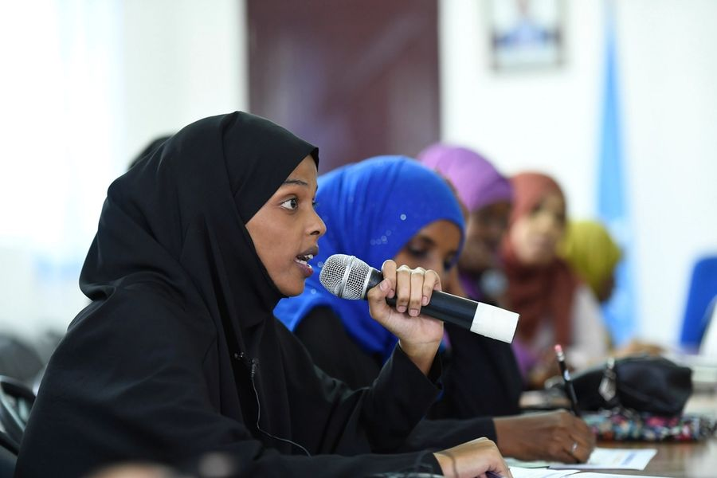

フランスのAFP通信、サイバー攻撃を受けプラットフォームを停止せざるを得ずFrancúzska agentúra AFP musela po kybernetickom útoku odstaviť svoju platformuフランスの報道機関AFPはサイバー攻撃を受け、コンテンツプラットフォームを停止せざるを得なかった。調査は現在も続いている。
フランスのAFP通信、サイバー攻撃を受けプラットフォームを停止せざるを得ずFrancúzska agentúra AFP musela po kybernetickom útoku odstaviť svoju platformuフランスの報道機関AFPはサイバー攻撃を受け、コンテンツプラットフォームを停止せざるを得なかった。調査は現在も続いている。 米大統領、プーチン氏に欧州に対するすべての軍事作戦の停止を呼びかけAmerický prezident apeluje na Putina, aby zastavil všetky vojenské operácie proti Európeドナルド・トランプ氏は、プーチン氏に欧州に対するロシアのすべての軍事作戦を終了するよう個人的に要請したと主張している。それがウクライナの和平への道を開く可能性があると信じている。
米大統領、プーチン氏に欧州に対するすべての軍事作戦の停止を呼びかけAmerický prezident apeluje na Putina, aby zastavil všetky vojenské operácie proti Európeドナルド・トランプ氏は、プーチン氏に欧州に対するロシアのすべての軍事作戦を終了するよう個人的に要請したと主張している。それがウクライナの和平への道を開く可能性があると信じている。 金曜日にかけての夜は雪と雨を予想。運転者は路面凍結に悩まされる可能性V noci na piatok treba počítať so snežením aj dažďom. Vodičov môže potrápiť poľadovicaスロバキアは変わりやすい降水を伴う曇りの夜となる見通しだ
金曜日にかけての夜は雪と雨を予想。運転者は路面凍結に悩まされる可能性V noci na piatok treba počítať so snežením aj dažďom. Vodičov môže potrápiť poľadovicaスロバキアは変わりやすい降水を伴う曇りの夜となる見通しだ クリミアが突然、完全な闇に包まれた。ガソリンと水の不足に加え、今度は12時間の停電もKrym sa náhle ponoril do úplnej tmy. K nedostatku benzínu a vody sa teraz pridal aj 12 hodinový blackoutクリミア半島とセヴァストポリが大規模な電力供給障害に見舞われた。障害は地域外にあるとみられ、電力関係者は電力網の迅速な復旧を約束している。
クリミアが突然、完全な闇に包まれた。ガソリンと水の不足に加え、今度は12時間の停電もKrym sa náhle ponoril do úplnej tmy. K nedostatku benzínu a vody sa teraz pridal aj 12 hodinový blackoutクリミア半島とセヴァストポリが大規模な電力供給障害に見舞われた。障害は地域外にあるとみられ、電力関係者は電力網の迅速な復旧を約束している。 6カ国、ブリュッセルに軍事用燃料パイプラインと貯蔵施設への投資を要請Šesť krajín vyzýva Brusel, aby investoval do vojenských palivovodov a skladovスロバキアを含む6カ国が、EU予算で軍事用燃料パイプラインと貯蔵施設に資金を出すようブリュッセルに圧力をかけている。供給体制の弱さが欧州の防衛を脅かしていると警告している。
6カ国、ブリュッセルに軍事用燃料パイプラインと貯蔵施設への投資を要請Šesť krajín vyzýva Brusel, aby investoval do vojenských palivovodov a skladovスロバキアを含む6カ国が、EU予算で軍事用燃料パイプラインと貯蔵施設に資金を出すようブリュッセルに圧力をかけている。供給体制の弱さが欧州の防衛を脅かしていると警告している。 ラージャ氏の下で、一部で列車を国のバスに置き換えることが検討されている。自治体の反発を招いたU Ráža uvažujú, či niekde nevymeniť vlak za štátny autobus. Pobúrili samosprávyスロバキア鉄道会社が、一部の鉄道路線にバスを導入する可能性に備えていると発表したわずか数時間後、それに対する反発が…
ラージャ氏の下で、一部で列車を国のバスに置き換えることが検討されている。自治体の反発を招いたU Ráža uvažujú, či niekde nevymeniť vlak za štátny autobus. Pobúrili samosprávyスロバキア鉄道会社が、一部の鉄道路線にバスを導入する可能性に備えていると発表したわずか数時間後、それに対する反発が… 『Duel』がJednotkaで終了、ロシアの将軍が逮捕に直面、初雪でブラチスラバがまひ（今日のニュース選）Relácia Duel na Jednotke končí, ruský generál čelí zatknutiu a prvý sneh ochromil Bratislavu (denný výber)今日のニュース概要をご覧ください。
『Duel』がJednotkaで終了、ロシアの将軍が逮捕に直面、初雪でブラチスラバがまひ（今日のニュース選）Relácia Duel na Jednotke končí, ruský generál čelí zatknutiu a prvý sneh ochromil Bratislavu (denný výber)今日のニュース概要をご覧ください。 腎臓の専門家が人気の健康飲料に警告、ただしコーヒーではないOdborníci na obličky varujú pred obľúbeným zdravým nápojom, o kávu však nejde野菜と果物がたっぷり入ったカクテルを飲む朝の習慣は、健康的なライフスタイルの象徴となった。しかし腎臓専門医は警告する。ある人にとっては健康の妙薬でも、それが
腎臓の専門家が人気の健康飲料に警告、ただしコーヒーではないOdborníci na obličky varujú pred obľúbeným zdravým nápojom, o kávu však nejde野菜と果物がたっぷり入ったカクテルを飲む朝の習慣は、健康的なライフスタイルの象徴となった。しかし腎臓専門医は警告する。ある人にとっては健康の妙薬でも、それが Newsfilter：元スメル党員は豪華な邸宅を所有し、スロバキアにはなぜ荒廃しているのかの説明があるNewsfilter: Exsmerák má luxusnú vilu a Slovensko vysvetlenie, prečo je zhumpľované1. なぜシェイクたちがスロバキアに来「なければならない」のか。2. 集落での新たな悲劇、相変わらずの無関心。3. バルテクは新たなコレシーク、タラバとクッファが彼を台無しにしている。
Newsfilter：元スメル党員は豪華な邸宅を所有し、スロバキアにはなぜ荒廃しているのかの説明があるNewsfilter: Exsmerák má luxusnú vilu a Slovensko vysvetlenie, prečo je zhumpľované1. なぜシェイクたちがスロバキアに来「なければならない」のか。2. 集落での新たな悲劇、相変わらずの無関心。3. バルテクは新たなコレシーク、タラバとクッファが彼を台無しにしている。 われわれには石油はないが、質の高い人材がいる。スロバキアには国家指導部に専門家が必要だ（イヴァン・シュテフンコとシュテファン・キシュの意見）Nemáme ropu, ale máme kvalitných ľudí. Slovensko potrebuje odborníkov vo vedení štátu (názor Ivana Štefunka a Štefana Kišša)真の愛国心は、要人たちによる祝日の派手な祝賀にではなく、国を前進させようとする努力に表れる。そのためには、まず何よりもわれわれのプログラムを推進する必要がある。
われわれには石油はないが、質の高い人材がいる。スロバキアには国家指導部に専門家が必要だ（イヴァン・シュテフンコとシュテファン・キシュの意見）Nemáme ropu, ale máme kvalitných ľudí. Slovensko potrebuje odborníkov vo vedení štátu (názor Ivana Štefunka a Štefana Kišša)真の愛国心は、要人たちによる祝日の派手な祝賀にではなく、国を前進させようとする努力に表れる。そのためには、まず何よりもわれわれのプログラムを推進する必要がある。 野党指導者ゴンサレス・ウルティア氏、亡命先からベネズエラへの帰国を希望Opozičný líder González Urrutia sa chce vrátiť z exilu naspäť do Venezuelyベネズエラの野党指導者ゴンサレス・ウルティア氏は、数カ月にわたる亡命生活を経て、祖国への帰国を計画している。多くの人々が、同氏を…年の大統領選挙の正当な勝者だと考えている。
野党指導者ゴンサレス・ウルティア氏、亡命先からベネズエラへの帰国を希望Opozičný líder González Urrutia sa chce vrátiť z exilu naspäť do Venezuelyベネズエラの野党指導者ゴンサレス・ウルティア氏は、数カ月にわたる亡命生活を経て、祖国への帰国を計画している。多くの人々が、同氏を…年の大統領選挙の正当な勝者だと考えている。 なぜ息子が衰弱していくのか分からず、もう息子と話すこともできない。それでも、2人はこれまでになく親密だNevie, prečo jeho syn slabne, už sa s ním nemôže rozprávať. No sú si blízki viac než kedykoľvek predtýmチェコ出身の18歳のマルティン・クリメシュさんは、原因不明の病気を抱えている。幼い頃から両親は国内外で検査を受けさせてきたが、一流の専門家は誰も診断を下していない
なぜ息子が衰弱していくのか分からず、もう息子と話すこともできない。それでも、2人はこれまでになく親密だNevie, prečo jeho syn slabne, už sa s ním nemôže rozprávať. No sú si blízki viac než kedykoľvek predtýmチェコ出身の18歳のマルティン・クリメシュさんは、原因不明の病気を抱えている。幼い頃から両親は国内外で検査を受けさせてきたが、一流の専門家は誰も診断を下していない 旅行者向けブラックフライデー：より多くを見て、より安く済ませるには？Black Friday pre cestovateľov: Ako vidieť viac a zaplatiť menej?10日間で南米4カ国を旅したり、セーシェルとモーリシャスのビーチとマダガスカルの荒々しい自然を組み合わせたり、未来的な中国を発見したり？経験豊富な
旅行者向けブラックフライデー：より多くを見て、より安く済ませるには？Black Friday pre cestovateľov: Ako vidieť viac a zaplatiť menej?10日間で南米4カ国を旅したり、セーシェルとモーリシャスのビーチとマダガスカルの荒々しい自然を組み合わせたり、未来的な中国を発見したり？経験豊富な 民主党、スロブナフトの焼却施設への同意取り消しを裁判所に求め提訴Demokrati žiadajú súd o zrušenie súhlasu so spaľovňou Slovnaftu, podali žalobu民主党は、スロブナフトの新しい焼却施設に対する国の同意を法廷で争い、違法な決定だと述べている。さらに法的措置を取る用意があると主張している。
民主党、スロブナフトの焼却施設への同意取り消しを裁判所に求め提訴Demokrati žiadajú súd o zrušenie súhlasu so spaľovňou Slovnaftu, podali žalobu民主党は、スロブナフトの新しい焼却施設に対する国の同意を法廷で争い、違法な決定だと述べている。さらに法的措置を取る用意があると主張している。 貯蓄をどう扱う？専門家が、予備資金や結婚・老後のためのお金の預け先をアドバイスAko naložiť s úsporami? Odborníci radia, kam uložiť rezervu aj peniaze na svadbu či dôchodokわきに蓄えておくお金は、すべてが同じ役割を持つ必要はない。あるものは予期せぬ収入の途絶を乗り切る助けとなり、別のものは…での計画を実現するために役立つ。
貯蓄をどう扱う？専門家が、予備資金や結婚・老後のためのお金の預け先をアドバイスAko naložiť s úsporami? Odborníci radia, kam uložiť rezervu aj peniaze na svadbu či dôchodokわきに蓄えておくお金は、すべてが同じ役割を持つ必要はない。あるものは予期せぬ収入の途絶を乗り切る助けとなり、別のものは…での計画を実現するために役立つ。 カメニツキー氏は委員会による予算評価を自賛し、批判には目を向けなかった。その発言を検証したKamenický sa chválil hodnotením rozpočtu od Komisie, kritiku si nevšímal. Overovali sme jeho výrokyラディスラフ・カメニツキー財務相（Smer）は水曜日、閣議後に、欧州委員会が来年度予算を好意的に評価したと語った。財務相は
カメニツキー氏は委員会による予算評価を自賛し、批判には目を向けなかった。その発言を検証したKamenický sa chválil hodnotením rozpočtu od Komisie, kritiku si nevšímal. Overovali sme jeho výrokyラディスラフ・カメニツキー財務相（Smer）は水曜日、閣議後に、欧州委員会が来年度予算を好意的に評価したと語った。財務相は ブラチスラバ市立劇場でのレイプ：ペリコ裁判Znásilnenie v bratislavskom mestskom divadle: Proces Pelicotスロバキアでは、犯罪被害者や遺族の前で、われわれは単に正義があるふりをしている。それは舞台の上で探してほしい。
ブラチスラバ市立劇場でのレイプ：ペリコ裁判Znásilnenie v bratislavskom mestskom divadle: Proces Pelicotスロバキアでは、犯罪被害者や遺族の前で、われわれは単に正義があるふりをしている。それは舞台の上で探してほしい。 タラバ氏、トスカーナで代表団とホテルに1泊4700ユーロ。前大臣は、自分も他者の支出に関する情報を持っていると伝えているTaraba v Toskánsku: 4700 eur za noc v hoteli s delegáciou. Exminister odkazuje, že aj on má informácie o míňaní inýchトスカーナでの休暇ではなく、複数人からなる代表団の出張だった――元大臣トマーシュ・タラバ氏は業務用カードの明細をそう説明し、そのカードで支払った
タラバ氏、トスカーナで代表団とホテルに1泊4700ユーロ。前大臣は、自分も他者の支出に関する情報を持っていると伝えているTaraba v Toskánsku: 4700 eur za noc v hoteli s delegáciou. Exminister odkazuje, že aj on má informácie o míňaní inýchトスカーナでの休暇ではなく、複数人からなる代表団の出張だった――元大臣トマーシュ・タラバ氏は業務用カードの明細をそう説明し、そのカードで支払った ウクライナに残された時間は少なくなり、首脳らはフィツォ氏が贈与と呼ぶ融資をどうするかで対立Čas pre Ukrajinu sa kráti, lídri sa sporia, čo s pôžičkou, ktorú Fico volá darom欧州連合の首脳らは、2日間の臨時首脳会議の初日、次期の欧州長期予算がどのようなものになるべきかで合意できなかった。イタリア首相によると
ウクライナに残された時間は少なくなり、首脳らはフィツォ氏が贈与と呼ぶ融資をどうするかで対立Čas pre Ukrajinu sa kráti, lídri sa sporia, čo s pôžičkou, ktorú Fico volá darom欧州連合の首脳らは、2日間の臨時首脳会議の初日、次期の欧州長期予算がどのようなものになるべきかで合意できなかった。イタリア首相によると Shooty：勤務用カードShooty: Služobná karta
Shooty：勤務用カードShooty: Služobná karta セルヒー・ジャダン：詩と多くの問いSerhij Žadan: básne a veľa otázokこんな作家を愛さずにはいられない、だろう？反逆と詩人の反抗的なイメージが、愛と優しさと痛みに満ちた、鋭い詩と散文と結びついている。
セルヒー・ジャダン：詩と多くの問いSerhij Žadan: básne a veľa otázokこんな作家を愛さずにはいられない、だろう？反逆と詩人の反抗的なイメージが、愛と優しさと痛みに満ちた、鋭い詩と散文と結びついている。
ジェンスン・フアン氏の帰還は市場を喜ばせたが、新たな情報はエヌビディアの状況をさらに悪化させているNávrat Jensena Huanga potešil trhy, nové informácie však situáciu Nvidie ešte zhoršujúAIに関するNewsfilterを読んでいる。ここでは毎週、人工知能とテクノロジーの世界で最も重要な出来事を解説する。1. ジェンスン・フアン氏が帰ってきたが、 また一つ刑事犯罪が減る。シュタイ・エシュトク氏はエミレーツでももう問題を抱えなくなるだろうO ďalší trestný čin menej. Šutaj Eštok v Emirátoch by už nemal problém連立与党は、不当な利益の受領という刑事犯罪を廃止したい考えだ。これは、ロベルト・フィツォ氏のプライベート機によるクロアチアへの飛行や、J議員に対する捜査にも関係する可能性がある。
また一つ刑事犯罪が減る。シュタイ・エシュトク氏はエミレーツでももう問題を抱えなくなるだろうO ďalší trestný čin menej. Šutaj Eštok v Emirátoch by už nemal problém連立与党は、不当な利益の受領という刑事犯罪を廃止したい考えだ。これは、ロベルト・フィツォ氏のプライベート機によるクロアチアへの飛行や、J議員に対する捜査にも関係する可能性がある。 データセンターはスロバキアにも建設される可能性があり、投資家が検討しているとチップ専門家のヴァイス氏が語るDátové centrum môže vzniknúť aj na Slovensku, investori o tom uvažujú, tvrdí odborník na čipy Weis人工知能には膨大な数のチップ、電力、そして冷却システムが必要だ。スロバキアには最先端の半導体を製造する工場はないが、
データセンターはスロバキアにも建設される可能性があり、投資家が検討しているとチップ専門家のヴァイス氏が語るDátové centrum môže vzniknúť aj na Slovensku, investori o tom uvažujú, tvrdí odborník na čipy Weis人工知能には膨大な数のチップ、電力、そして冷却システムが必要だ。スロバキアには最先端の半導体を製造する工場はないが、 スロバキア、ウクライナへの緊急電力供給を再開する可能性 政府は航空燃料や採掘についても対応へSlovensko by mohlo obnoviť dodávky núdzovej elektriny na Ukrajinu. Vláda chce riešiť aj letecké palivo či ťažbuラディスラフ・カメニツキー財務相は3月末までに、ロベルト・フィツォ内閣がウクライナへの緊急電力供給を停止した決議の撤廃を提案することになっている。
スロバキア、ウクライナへの緊急電力供給を再開する可能性 政府は航空燃料や採掘についても対応へSlovensko by mohlo obnoviť dodávky núdzovej elektriny na Ukrajinu. Vláda chce riešiť aj letecké palivo či ťažbuラディスラフ・カメニツキー財務相は3月末までに、ロベルト・フィツォ内閣がウクライナへの緊急電力供給を停止した決議の撤廃を提案することになっている。 オスカル・ヴィラギ氏が法律事務所RUŽIČKA AND PARTNERSを退所Oszkár Világi odchádza z advokátskej kancelárie RUŽIČKA AND PARTNERS同事務所は、この移行は双方の合意に基づき、友好的な雰囲気の中で行われたと発表した。
オスカル・ヴィラギ氏が法律事務所RUŽIČKA AND PARTNERSを退所Oszkár Világi odchádza z advokátskej kancelárie RUŽIČKA AND PARTNERS同事務所は、この移行は双方の合意に基づき、友好的な雰囲気の中で行われたと発表した。 コラチコフ近くの集落で火災、14棟が焼失：消防士が胴体だけの遺体を発見、子どもたちは依然として行方不明Požiar v osade pri Kolačkove zničil 14 domov: Hasiči našli torzo tela, deti sú stále nezvestné住民は5月から安全な場所へ移るはずだったが、プレハブ小屋用の空き地は今日まで見つかっていない。
コラチコフ近くの集落で火災、14棟が焼失：消防士が胴体だけの遺体を発見、子どもたちは依然として行方不明Požiar v osade pri Kolačkove zničil 14 domov: Hasiči našli torzo tela, deti sú stále nezvestné住民は5月から安全な場所へ移るはずだったが、プレハブ小屋用の空き地は今日まで見つかっていない。 私たちは何年も問題を先送りしてきた。エネルギー危機はわずか1年で私たちに追いつくRoky pred sebou tlačíme problém. Energetická kríza nás dobehne už o rok専門家は、来年の家庭向けエネルギー支援がどのように機能するかだけでなく、この制度の隠れたコストや、2027年以降に何が起こるかについても説明する。
私たちは何年も問題を先送りしてきた。エネルギー危機はわずか1年で私たちに追いつくRoky pred sebou tlačíme problém. Energetická kríza nás dobehne už o rok専門家は、来年の家庭向けエネルギー支援がどのように機能するかだけでなく、この制度の隠れたコストや、2027年以降に何が起こるかについても説明する。 政治的な妨害者と破壊工作員Politickí záškodníci a diverzantiフィツォ氏が扇動的に「戦争は主に前線に集中している」と言うとき、彼は冷笑的に、聴衆の頭の中に正規の…という印象を生み出すイメージを植え付けている
政治的な妨害者と破壊工作員Politickí záškodníci a diverzantiフィツォ氏が扇動的に「戦争は主に前線に集中している」と言うとき、彼は冷笑的に、聴衆の頭の中に正規の…という印象を生み出すイメージを植え付けている 電気自動車かガソリン車か？費用がどれくらいかかるか比較してみようElektromobil či spaľovacie auto? Porovnajte si, koľko vás budú stáť
電気自動車かガソリン車か？費用がどれくらいかかるか比較してみようElektromobil či spaľovacie auto? Porovnajte si, koľko vás budú stáť 「良い裁判官になります」とクラーティク教授、学位論文をめぐる騒動と懲戒手続きを抱えながら主張Budem dobrým sudcom, tvrdí profesor Klátik po kauze s diplomovkou a s disciplinárnym stíhaním na krkuヤロスラフ・クラーティク氏は弁護士として懲戒手続きの対象となっているが、裁判官の選考手続きにはそれと逆の内容を示す証明書を提出した。弁護士会は、…と主張している
「良い裁判官になります」とクラーティク教授、学位論文をめぐる騒動と懲戒手続きを抱えながら主張Budem dobrým sudcom, tvrdí profesor Klátik po kauze s diplomovkou a s disciplinárnym stíhaním na krkuヤロスラフ・クラーティク氏は弁護士として懲戒手続きの対象となっているが、裁判官の選考手続きにはそれと逆の内容を示す証明書を提出した。弁護士会は、…と主張している 新たな欧州税の恐れ。豊かな国々が望むように、私たちはお金を失うのか？Hrozí nám nová európska daň. Prídeme o peniaze, ako to chcú bohaté krajiny?EUのサミットでは数千億規模の金額と、長期予算およびウクライナ支援の行方が懸かっている。スロバキアは、欧州資金の一部を失う可能性がある国の一つである。
新たな欧州税の恐れ。豊かな国々が望むように、私たちはお金を失うのか？Hrozí nám nová európska daň. Prídeme o peniaze, ako to chcú bohaté krajiny?EUのサミットでは数千億規模の金額と、長期予算およびウクライナ支援の行方が懸かっている。スロバキアは、欧州資金の一部を失う可能性がある国の一つである。 「結束の友」グループ、EUの地域と農業従事者への資金維持を目指すSkupina priateľov kohézie chce zachovať financie pre regióny a poľnohospodárov v EÚコスタ氏はブリュッセルでEU長期予算をめぐる戦いを開始し、指導者たちに開かれた考えを持つよう求めている。決定は全会一致でなければならず、地域と農家のための数十億規模の資金が懸かっている。
「結束の友」グループ、EUの地域と農業従事者への資金維持を目指すSkupina priateľov kohézie chce zachovať financie pre regióny a poľnohospodárov v EÚコスタ氏はブリュッセルでEU長期予算をめぐる戦いを開始し、指導者たちに開かれた考えを持つよう求めている。決定は全会一致でなければならず、地域と農家のための数十億規模の資金が懸かっている。 史上最長の気候サミットが政治的合意なしに終了。スロバキアは何を持ち帰ることができるか？（ドゥシャン・フレネク氏の意見）Najdlhší klimatický samit sa skončil bez politickej dohody. Čo si z neho môže odniesť Slovensko? (názor Dušana Chreneka)スロバキアにとっての問いは、もはや世界が何に署名したかだけではなく、どの国の連合に加わるか、どの機会を活用するか、そしてそれらを競争力に変えることができるかどうかである。
史上最長の気候サミットが政治的合意なしに終了。スロバキアは何を持ち帰ることができるか？（ドゥシャン・フレネク氏の意見）Najdlhší klimatický samit sa skončil bez politickej dohody. Čo si z neho môže odniesť Slovensko? (názor Dušana Chreneka)スロバキアにとっての問いは、もはや世界が何に署名したかだけではなく、どの国の連合に加わるか、どの機会を活用するか、そしてそれらを競争力に変えることができるかどうかである。 農家はより安い灌漑を利用可能に、国が年間220万ユーロを自国の予算から拠出Poľnohospodári získajú lacnejšie závlahy, štát prispeje 2,2 milióna eur ročne z vlastného rozpočtu農家は結局、灌漑地1ヘクタール当たりほぼ43ユーロを支払う必要はなく、賃料は3ユーロに戻る。差額は、インフラの更新を条件に国が負担する。
農家はより安い灌漑を利用可能に、国が年間220万ユーロを自国の予算から拠出Poľnohospodári získajú lacnejšie závlahy, štát prispeje 2,2 milióna eur ročne z vlastného rozpočtu農家は結局、灌漑地1ヘクタール当たりほぼ43ユーロを支払う必要はなく、賃料は3ユーロに戻る。差額は、インフラの更新を条件に国が負担する。 欧州理事会、ブリュッセルで予算とウクライナへの財政支援を議論するも最終的な結論なしEurópska rada diskutuje v Bruseli o rozpočte a finančnej pomoci Ukrajine bez konečných záverov臨時サミットでは、当初の案より2000億ユーロ少ない多年度財政枠組み（VFR）の案が示されたが、スロバキアにとっては今のところ最も有利な内容となっている。しかし首脳らは依然として負担の分担をめぐって苦闘している。
欧州理事会、ブリュッセルで予算とウクライナへの財政支援を議論するも最終的な結論なしEurópska rada diskutuje v Bruseli o rozpočte a finančnej pomoci Ukrajine bez konečných záverov臨時サミットでは、当初の案より2000億ユーロ少ない多年度財政枠組み（VFR）の案が示されたが、スロバキアにとっては今のところ最も有利な内容となっている。しかし首脳らは依然として負担の分担をめぐって苦闘している。 米国の関税が世界経済を脅かす。中国は深刻なリスクを警告し、厳しい対応を約束Clá z USA hrozia svetovej ekonomike. Čína varuje pred vážnymi rizikami a sľubuje tvrdú odpoveďワシントンは中国やEUを含む最大14のパートナーを対象に新たな関税を計画し、過剰な生産能力を理由に挙げている。北京は長期的な損害への警告で応じた。
米国の関税が世界経済を脅かす。中国は深刻なリスクを警告し、厳しい対応を約束Clá z USA hrozia svetovej ekonomike. Čína varuje pred vážnymi rizikami a sľubuje tvrdú odpoveďワシントンは中国やEUを含む最大14のパートナーを対象に新たな関税を計画し、過剰な生産能力を理由に挙げている。北京は長期的な損害への警告で応じた。 サウジアラビアの製油所への砲撃の報に、市場は原油価格の上昇で反応Trh na správu o ostreľovaní rafinérie v Saudskej Arábii reagoval rastom cien ropyサウジアラビア最大の製油所ラス・タヌーラがフーシ派の攻撃の標的となった。ブレント原油とWTIの価格は事件後にやや上昇し、市場は警戒を強めた。
サウジアラビアの製油所への砲撃の報に、市場は原油価格の上昇で反応Trh na správu o ostreľovaní rafinérie v Saudskej Arábii reagoval rastom cien ropyサウジアラビア最大の製油所ラス・タヌーラがフーシ派の攻撃の標的となった。ブレント原油とWTIの価格は事件後にやや上昇し、市場は警戒を強めた。 プレショフの裁判所、行方不明の実業家を捜索。成功していた製薬会社を最後の1セントまで食い尽くしたPrešovský súd hľadá strateného podnikateľa. Úspešnú farmafirmu vytuneloval do posledného centu検察官は、食い物にされた企業の事件で、不正な現金引き出しと詐欺のリストをほぼ2時間にわたって読み上げた。
プレショフの裁判所、行方不明の実業家を捜索。成功していた製薬会社を最後の1セントまで食い尽くしたPrešovský súd hľadá strateného podnikateľa. Úspešnú farmafirmu vytuneloval do posledného centu検察官は、食い物にされた企業の事件で、不正な現金引き出しと詐欺のリストをほぼ2時間にわたって読み上げた。 工場の2倍の給与。新たな業界がますます多くのスロバキア人を惹きつけているDvakrát vyššie platy ako vo fabrikách. Nové odvetvie láka čoraz viac Slovákovサービスセンターでは、平均収入がすでに3,000ユーロを超えた。← トップページへ戻る
工場の2倍の給与。新たな業界がますます多くのスロバキア人を惹きつけているDvakrát vyššie platy ako vo fabrikách. Nové odvetvie láka čoraz viac Slovákovサービスセンターでは、平均収入がすでに3,000ユーロを超えた。← トップページへ戻る